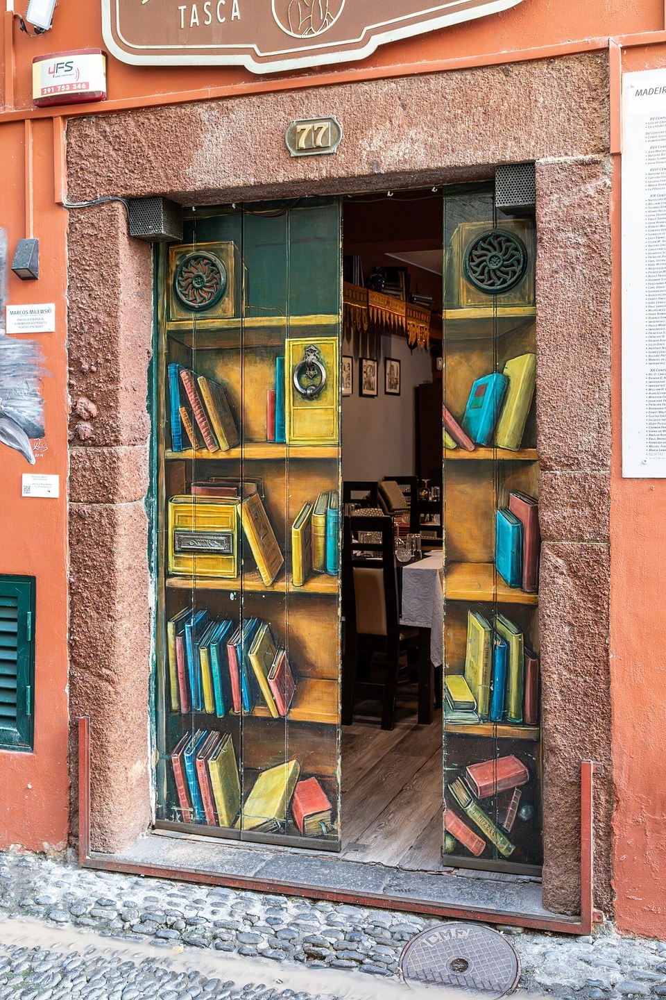

Фото: Dietmar Rabich · CC BY-SA 4.0 · источник · кадрирование
Фуншал и южный берег
Фуншал — старый город и рынок
Культура и история
Главное в регионеМозаичные мостовые, расписные двери и рынок знакомят с повседневной жизнью острова.
Время на посещение3–5 часов
НагрузкаЛегко
Подробнее
Начните с рынка Mercado dos Lavradores и рыбного павильона, затем пройдите по улице Rua de Santa Maria с расписными дверями к крепости Сан-Тиагу. В центре загляните в собор Се с резным деревянным потолком и прогуляйтесь по набережной. Музеи, кафе и рынок удобно совместить в одном городском маршруте.
Билеты и бронирование
Для прогулки по улицам билет не нужен. Музеи и отдельные интерьеры оплачиваются отдельно; часы рынка проверьте перед визитом. Городские парковки платные.
Городской маршрут можно сократить; улицы местами крутые, покрытие бывает скользким.
Фуншал и южный берег
Фуншал
Фуншал
Мозаичные мостовые, расписные двери и рынок знакомят с повседневной жизнью острова.
Время на посещение3–5 часовНагрузкаЛегко